<p>
    <mat-toolbar class="fondo">
        
        <div class="links">
            <ul>
                <li><a mat-button routerLink="">Inicio</a></li>
                <li><a mat-button routerLink="/Animales">Animales</a></li>
                <li><a mat-button routerLink="/actividades">Actividades</a></li>
                <li><a mat-button routerLink="/Voluntarios">Voluntariado</a></li>
                <li><a mat-button routerLink="/Nosotros">Sobre Nosotros</a></li>
            </ul>
        </div>
    </mat-toolbar>
    <p>